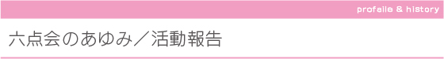

＿＿アンダーライン文字をクリックすると詳細画面がご覧になれます。
文京区社会福祉協議会主催点訳講習会を修了した受講生を中心に、代表 月橋順子氏が
サークル・六点会を発足。個人・団体・行政などからの依頼に応えて点訳・墨字制作を主として
スタートしました。
1993年(平成5年)からは、逆瀬川美佐子氏を講師に迎え、触ってわかる地図や絵本の制作などの
触図制作も 活動に加え、現在に至っています。
|

|

＿＿アンダーライン文字をクリックすると詳細画面がご覧になれます。
文京区社会福祉協議会主催点訳講習会を修了した受講生を中心に、代表 月橋順子氏が サークル・六点会を発足。個人・団体・行政などからの依頼に応えて点訳・墨字制作を主として スタートしました。 1993年(平成5年)からは、逆瀬川美佐子氏を講師に迎え、触ってわかる地図や絵本の制作などの 触図制作も 活動に加え、現在に至っています。
|